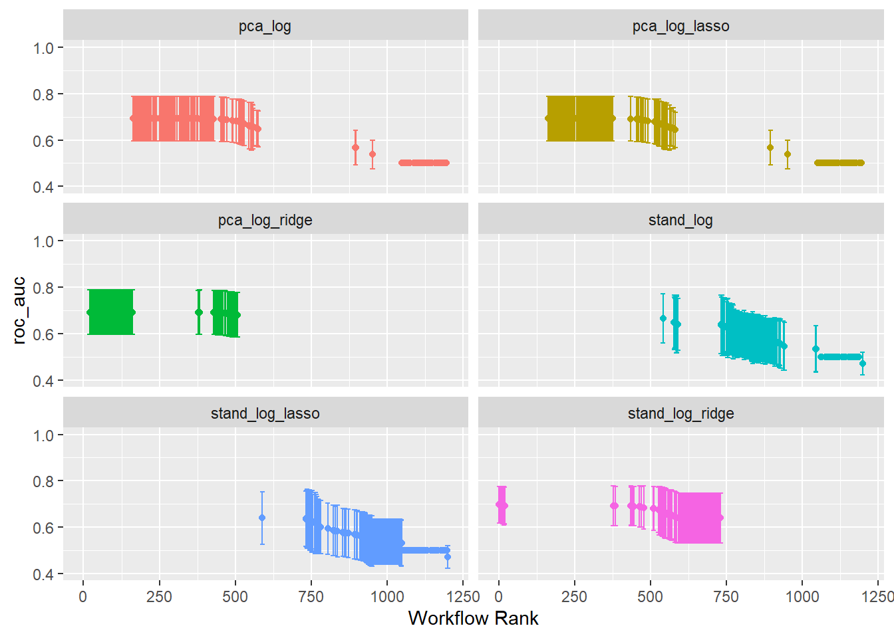

Show the code
set.seed(1337)
library("tidymodels")
tidymodels::tidymodels_prefer()
library("vegan")Set seed and load packages.
set.seed(1337)
library("tidymodels")
tidymodels::tidymodels_prefer()
library("vegan")Load data.
count_matrix <- readr::read_rds("https://github.com/WilliamH-R/BioStatistics/raw/main/data/count_matrix/count_matrix.rds") |>
select(-"NA")
meta <- read.csv(file = "data/metadata.txt") |>
as_tibble() |>
select(Run, chem_administration, ETHNICITY, geo_loc_name,
Host_age, host_body_mass_index, Host_disease, host_phenotype, host_sex) |>
rename(Sample = Run,
Treatment = chem_administration,
Ethnicity = ETHNICITY,
Location = geo_loc_name,
Age = Host_age,
BMI = host_body_mass_index,
Disease_severity = Host_disease,
EDSS = host_phenotype,
Sex = host_sex) |>
mutate(Patient_status = case_when(Disease_severity == "1HealthyControl" ~ "Healthy",
TRUE ~ "MS"),
EDSS = as.factor(EDSS),
EDSS = case_when(is.na(EDSS) & Disease_severity == "1HealthyControl" ~ "-1",
is.na(EDSS) & Disease_severity != "1HealthyControl" ~ "Unknown",
TRUE ~ EDSS),
EDSS = as.factor(EDSS))The data is joined with the metadata as the Patient_status is used as the outcome variable. Only the columns that are needed for the model are kept. Notice inner_join() is used such that only rows for which both the count matrix and metadata are available are kept.
count_matrix <- count_matrix |>
inner_join(meta,
by = "Sample") |>
select(-c(Sample, Treatment, Ethnicity, Location,
Age, BMI, Disease_severity, EDSS, Sex)) |>
relocate(Patient_status)The data is split into a training and testing set using cross-validation to avoid overfitting. This is especially needed, as some hyperparameters needs to be tuned.
The data is split:
count_matrix_split <- initial_split(count_matrix,
prop = params$percentage_train,
strata = Patient_status)
count_matrix_train <- training(count_matrix_split)
count_matrix_test <- testing(count_matrix_split)The CV object is created:
count_matrix_folds <- vfold_cv(count_matrix_train,
v = params$n_folds)
count_matrix_folds# 10-fold cross-validation
# A tibble: 10 × 2
splits id
<list> <chr>
1 <split [327/37]> Fold01
2 <split [327/37]> Fold02
3 <split [327/37]> Fold03
4 <split [327/37]> Fold04
5 <split [328/36]> Fold05
6 <split [328/36]> Fold06
7 <split [328/36]> Fold07
8 <split [328/36]> Fold08
9 <split [328/36]> Fold09
10 <split [328/36]> Fold10The recipes contain two pieces of important information. The first is the formula that describes the relationship between the variables and the outcome. In this case, which genera to use for predicting disease. The second is the pre-processing steps that are applied to the data before the model is built. This could include steps such as scaling, log-transform or imputing missing values. Here, the data is already clr-transformed.
Two recipes are created. One without any pre-processing steps, and one where Principal Component Analysis (PCA) is applied to the data. In both cases, all variables is used to try and predict the outcome Patient_status.
stand_recipe <- recipe(Patient_status ~ .,
data = count_matrix_train)
pca_recipe <- stand_recipe |>
step_pca(all_predictors(),
threshold = 0.70)To model the data, a specification is needed. This includes the model to use, the engine to use, the mode of prediction and choosing hyperparameters. Since the outcome is binary, a logistic regression model is used. The model is later tuned using a grid search over the hyperparameters penalty and mixture. Models with exclusively Ridge and Lasso regularization are built, as well as a model with a mixture of both.
log_spec <- logistic_reg(penalty = tune(),
mixture = tune()) |>
set_engine("glmnet") |>
set_mode("classification")
log_ridge_spec <- logistic_reg(penalty = tune(),
mixture = 0) |>
set_engine("glmnet") |>
set_mode("classification")
log_lasso_spec <- logistic_reg(penalty = tune(),
mixture = 1) |>
set_engine("glmnet") |>
set_mode("classification")The hyperparameters penalty and mixture are extracted from the model specification. This is done to see the possible values that can be used in the grid search.
For the mixture, values between \(0.05\) and \(1\) is used which seem to be decent values.
log_spec |>
extract_parameter_set_dials() |>
extract_parameter_dials("mixture")Proportion of Lasso Penalty (quantitative)
Range: [0.05, 1]For the penalty, values between \(10^-10\) and \(1\) are used. The range is increased to \(10^3\). The updated range is saved in a new object, but the information is not added to the models until the workflow is created further down. As seen from the output, the information do not pertain to a specific model, but simply contain ranges for different hyperparameters.
log_param_ranges <- log_spec |>
extract_parameter_set_dials() |>
update(penalty = penalty(c(-10, 3)))
log_penalty_param_ranges <- log_lasso_spec |>
extract_parameter_set_dials() |>
update(penalty = penalty(c(-10, 3)))
log_param_rangesCollection of 2 parameters for tuning
identifier type object
penalty penalty nparam[+]
mixture mixture nparam[+]log_penalty_param_rangesCollection of 1 parameters for tuning
identifier type object
penalty penalty nparam[+]The recipes are combined with the model specifications to create a workflow set. The workflow set is used to fit the models to the data and evaluate the models. Notice here it is called a workflow set, as it contains multiple workflows. Each row of the workflow set is a workflow of its own which further contain the recipe and model.
A workflow set for all combinations of recipes and models is created:
workflow_set <- workflow_set(
preproc = list(stand = stand_recipe,
pca = pca_recipe),
models = list(log = log_spec,
log_ridge = log_ridge_spec,
log_lasso = log_lasso_spec)
)
workflow_set# A workflow set/tibble: 6 × 4
wflow_id info option result
<chr> <list> <list> <list>
1 stand_log <tibble [1 × 4]> <opts[0]> <list [0]>
2 stand_log_ridge <tibble [1 × 4]> <opts[0]> <list [0]>
3 stand_log_lasso <tibble [1 × 4]> <opts[0]> <list [0]>
4 pca_log <tibble [1 × 4]> <opts[0]> <list [0]>
5 pca_log_ridge <tibble [1 × 4]> <opts[0]> <list [0]>
6 pca_log_lasso <tibble [1 × 4]> <opts[0]> <list [0]>The parameter objects which contain the hyperparameter ranges are added to the workflow:
workflow_set <- workflow_set |>
option_add(id = c("stand_log", "pca_log"),
param_info = log_param_ranges) |>
option_add(id = c("stand_log_ridge",
"stand_log_lasso",
"pca_log_ridge",
"pca_log_lasso"),
param_info = log_penalty_param_ranges)
workflow_set# A workflow set/tibble: 6 × 4
wflow_id info option result
<chr> <list> <list> <list>
1 stand_log <tibble [1 × 4]> <opts[1]> <list [0]>
2 stand_log_ridge <tibble [1 × 4]> <opts[1]> <list [0]>
3 stand_log_lasso <tibble [1 × 4]> <opts[1]> <list [0]>
4 pca_log <tibble [1 × 4]> <opts[1]> <list [0]>
5 pca_log_ridge <tibble [1 × 4]> <opts[1]> <list [0]>
6 pca_log_lasso <tibble [1 × 4]> <opts[1]> <list [0]>All workflows in the workflow set contain hyperparameters. These are tuned with a search grid using the function tune_grid(). As workflow_set contain multiple workflows, the tune_grid() function can be mapped over the workflows to tune all hyperparameters using workflow_map(), a purrr-like map function.
Several settings for tuning the grid exists. This includes e.g. whether or not to parallelize, what output to save and how verbose the output should be, i.e. how much should be printed to std.out. The settings are set to:
grid_settings <-
control_grid(
save_pred = TRUE,
parallel_over = "everything",
save_workflow = TRUE,
extract = function(x) x
)The grid search is performed for a grid of size 10. This means that 10 different combinations of the hyperparameters are tried for each model.
grid_results <- workflow_set |>
workflow_map(
fn = "tune_grid",
seed = 1337,
resamples = count_matrix_folds,
grid = params$grid_size,
control = grid_settings
)tidymodels comes with a lot of convenience functions. One of these is autoplot() that can, among other things, plot the results of the grid search. The best result of each workflow is selected based on the accuracy. As seen, the best workflows all perform quite similarly with an accuracy of approximately \(0.9\).
autoplot(
grid_results,
rank_metric = "accuracy",
metric = "accuracy"
) +
geom_point(aes(y = mean,
color = wflow_id)) +
lims(y = c(0.75, 1))
The hyperparameters resulting in the best accuracy is extracted for each workflow. Note that the value of mixture is close to zero for both Elastic Net models, which means that the model emphasizes Ridge over Lasso. Note also that the penalty is much lower for the workflow with PCA pre-processing. This is likely due to the PCA reducing the number of variables, which in turn seems to reduce the need for regularization.
workflow_ids <- grid_results |>
pull(wflow_id)
tuning_params_result <- purrr::map(workflow_ids, ~{
grid_results |>
extract_workflow_set_result(.x) |>
select_best(metric = "accuracy") |>
mutate(wflow_id = .x)
}) |>
bind_rows() |>
mutate(mixture = case_when(stringr::str_detect(string = wflow_id,
pattern = "lasso") ~ 1,
stringr::str_detect(string = wflow_id,
pattern = "ridge") ~ 0,
TRUE ~ mixture)) |>
select(wflow_id, penalty, mixture)
tuning_params_result# A tibble: 6 × 3
wflow_id penalty mixture
<chr> <dbl> <dbl>
1 stand_log 0.0191 0.444
2 stand_log_ridge 0.0716 0
3 stand_log_lasso 0.0117 1
4 pca_log 2.52 0.0560
5 pca_log_ridge 0.0143 0
6 pca_log_lasso 0.00529 1 As the hyperparameters have been tuned, the final workflow can be created. This is done by adding the hyperparameters to the workflow, fitting the model to the data and predict the outcome on the test set.
workflow_set_final <- purrr::map(workflow_ids, ~{
grid_results |>
extract_workflow(.x) |>
finalize_workflow(tuning_params_result |>
filter(wflow_id == .x)) |>
last_fit(split = count_matrix_split)
})
workflow_set_final[[1]]
# Resampling results
# Manual resampling
# A tibble: 1 × 6
splits id .metrics .notes .predictions .workflow
<list> <chr> <list> <list> <list> <list>
1 <split [364/92]> train/test split <tibble> <tibble> <tibble> <workflow>
[[2]]
# Resampling results
# Manual resampling
# A tibble: 1 × 6
splits id .metrics .notes .predictions .workflow
<list> <chr> <list> <list> <list> <list>
1 <split [364/92]> train/test split <tibble> <tibble> <tibble> <workflow>
[[3]]
# Resampling results
# Manual resampling
# A tibble: 1 × 6
splits id .metrics .notes .predictions .workflow
<list> <chr> <list> <list> <list> <list>
1 <split [364/92]> train/test split <tibble> <tibble> <tibble> <workflow>
[[4]]
# Resampling results
# Manual resampling
# A tibble: 1 × 6
splits id .metrics .notes .predictions .workflow
<list> <chr> <list> <list> <list> <list>
1 <split [364/92]> train/test split <tibble> <tibble> <tibble> <workflow>
[[5]]
# Resampling results
# Manual resampling
# A tibble: 1 × 6
splits id .metrics .notes .predictions .workflow
<list> <chr> <list> <list> <list> <list>
1 <split [364/92]> train/test split <tibble> <tibble> <tibble> <workflow>
[[6]]
# Resampling results
# Manual resampling
# A tibble: 1 × 6
splits id .metrics .notes .predictions .workflow
<list> <chr> <list> <list> <list> <list>
1 <split [364/92]> train/test split <tibble> <tibble> <tibble> <workflow>workflow_set_final[[4]] |>
collect_predictions() |>
conf_mat(truth = Patient_status,
estimate = .pred_class) Truth
Prediction Healthy MS
Healthy 0 0
MS 10 82